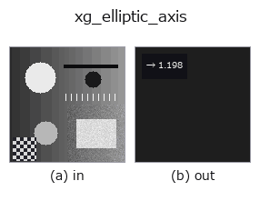

xldgeom op• Data kinds: contour → feature
• Call: fullseye.apply(img, "xg_elliptic_axis", a=0.5, b=0.5) (2-D model = एक image + दो scalar knobs a,b∈[0,1])
• HALCON समकक्ष: elliptic_axis_points_xld (अर्थ और parameters समझने के लिए HALCON reference उपयोगी है)

*Figure synthetic 128×128 input पर सच में चलाकर मिला output है। बाईं ओर input, दाईं ओर output। Point clouds ऊपर से देखे गए scatter के रूप में (brightness = z), 1-D series line के रूप में, volumes z दिशा में maximum-intensity projection के रूप में, videos बीच के frame के रूप में, complex images amplitude के रूप में, और जो return values चित्र नहीं बन सकते वे स्वयं values के रूप में दिखाए जाते हैं।*
*Knob a output नहीं बदलता (मापा गया: 0.1 / 0.5 / 0.9 पर एक जैसा)।*
*Knob b output नहीं बदलता (मापा गया: 0.1 / 0.5 / 0.9 पर एक जैसा)।*
Stages (पहले आने वाले ops → यह op, बाएँ से क्रम में):
▸ xg_elliptic_axis: stages का figure (docs site)
Point set का major/minor axis अनुपात sqrt(lambda_max/lambda_min)।
सभी contour points (closed contours के दोहराए गए अंतिम point को छोड़कर) के (row, col) covariance matrix के eigenvalues से equivalent ellipse का major/minor axis ratio sqrt(λ_max/λ_min) लौटाता है। a, b उपयोग नहीं होते।
return value 1 या अधिक का numpy.float64 है। isotropic point व्यवस्था में 1, जितना लंबा-पतला उतना बड़ा। λ_min <= 1e-12 (सभी points एक रेखा पर) में λ_max > 1e-12 हो तो 1e6, अन्यथा 1.0। बाकी मामलों में भी ऊपरी सीमा 1e6 पर काट दिया जाता है। 2 से कम points हों तो 1.0। मान non-finite हो जाए तब भी 1.0 पर लौट आता है। यह [0,1] में normalise नहीं की गई मात्रा है, इसलिए दूसरे features के साथ रखते समय scale का ध्यान रखें (1e6 के outliers आ सकते हैं)। xg_eccentricity उन्हीं eigenvalues को [0,1] में map करने वाला संस्करण है; यह op तब उपयोग करें जब ratio सीधे देखना हो। axis की बजाय bounding rectangle का aspect ratio चाहिए तो xg_height_width_ratio (यह दिशा पर निर्भर करता है)।
• gallery2d_geometry family guide
• Sample data catalog (DL URL / license) — 2-D के लिए skimage.data (BSD/public) + synthetic, 3-D के लिए real data sources (Stanford/PDS आदि) के DL URL।
• Operators का स्रोत और संदर्भ — इस op family के मूल research/methods के स्रोत।
• Algorithm का मानक स्रोत (लेखक, वर्ष) और उपयोग ऊपर की family usage guide में दिए गए हैं।
नीचे का program सच में चलता है, यह जाँचा गया है (figure वाला ही input)। Studio की help में यह block buttons बन जाता है, जिनसे इसे वहीं load करके चलाया जा सकता है।
threshold 0.50 0.50 sk_find_contours 0.50 0.50 xg_elliptic_axis 0.50 0.50
▸ यह pipeline load करें · Load करके चलाएँ
• gallery2d_geometry — py -3.11 examples/gallery2d_geometry.py
feature को input के रूप में लेते हैं)xldgeom)xg_moments · xg_area_center · xg_eccentricity · xg_orientation · xg_height_width_ratio · xg_regress_contours · xg_clip_contours · xg_gen_polygons
*Provenance: ops.py — 2D operator registry. यह per-op note tools/opdocs.py md से अपने-आप generate होता है (हाथ से edit न करें)।*
© 2026 Kazufumi Furuse — Fullseye operator documentation. Licensed under Apache-2.0.